The misplaced anchor: interest rate components in perpetual futures funding mechanisms
Abstract
Futures contracts derive their fair price from the cost of carry — the net expense of holding the underlying asset until delivery. In TradFi, this cost is embedded directly in the futures price through the basis, which converges to zero at expiry via arbitrage. Perpetual futures, having no expiry, replace this convergence mechanism with a periodic funding rate. The standard funding rate formula, established by BitMEX in 2016, includes two components: a premium index that ties the perp price to spot, and an interest rate (IR) component that captures the cost of carry as a baseline payment from one side to the other.
This paper traces the IR component from its theoretical roots in cost-of-carry pricing, through its implementation history — from the original dynamic rate sourced from Bitfinex lending markets to its entrenchment as a fixed 0.01% per 8 hours (~10.95% APR) in April 2017, and its subsequent, largely unquestioned adoption as the industry standard across centralized and decentralized exchanges. We evaluate this fixed anchor in light of prevailing capital costs observed in DeFi lending platforms, highlighting the mismatches and persistent structural distortions that emerge when the IR departs from the real cost of financing. We detail cases where specific exchanges have intentionally modified the IR for certain markets, and articulate criteria for a more principled calibration. Finally, we critically examine the standard funding rate formula employed by most exchanges, showing how both its structure and its embedded anchors can generate systematic mispricings and unintended market consequences.
1. Futures pricing and the cost of carry
Let’s start with the futures definition: Futures - agreements to buy or sell assets at a set price on a set date in the future.
The price of a futures contract is not arbitrary. In traditional markets, a well-established relationship links the futures price to the spot price of the underlying asset through the cost of carry - the total cost incurred by holding the asset from now until the delivery date.
1.1 The cost-of-carry model
For a futures contract expiring at time \(T\), the fair price is:
\[ F_T = S_0 \cdot e^{(r - y) \cdot T} \]
where \(S_0\) is the current spot price, \(r\) is the financing rate (the cost of borrowing cash to purchase the asset) and \(y\) is the yield generated by holding the asset (dividends, interest, staking rewards).
The basis is the difference between the futures price and the spot price, and is also a direct expression of this carry cost:
\[ \text{Basis} = F_T - S_0 = S_0 \cdot \left(e^{(r - y) \cdot T} - 1\right) \approx S_0 \cdot (r - y) \cdot T \]
Arbitrageurs enforce this relationship through cash-and-carry trades: if the futures price is too high, they buy spot, finance the purchase, and sell futures, locking in a risk-free profit. This activity compresses the basis back to its fair value.
Example: S&P 500 E-mini futures. In December 2024, the S&P 500 index closed at approximately 5,880. The effective federal funds rate was ~4.5%, and the index’s trailing dividend yield was ~1.3%. Using the continuous-yield approximation, the fair price of a 3-month E-mini futures contract is:
\[ F_{0.25} = 5{,}880 \cdot e^{(0.045 - 0.013) \cdot 0.25} \approx 5{,}927 \]
The ~47-point premium (~0.8% over spot, or ~3.2% annualized) is the net cost of carry: the financing rate minus the dividends a spot holder would collect over the contract’s life. In practice, CME calculates index futures fair value using discrete expected dividends in index points rather than a continuous yield, but for contracts with broad, frequently-paying constituents like the S&P 500, the approximation is close.
The basis encodes an economic equivalence. A trader who holds the futures position instead of buying the index basket directly avoids tying up capital in spot (posting only initial margin), but forgoes dividends and implicitly pays the financing cost through the higher entry price. If the market quoted the March 2025 E-mini at 5,960 (above the ~5,927 fair value), an arbitrageur would buy the S&P 500 basket on spot, sell the futures, collect dividends on the spot leg, and pocket the ~33-point excess when the basis converges at expiry.
To anchor this with market data, we estimate a daily fair basis for the S&P 500 E-mini using \(F = S e^{(r-y)T}\) with \(r\) proxied by the 13-week T-bill yield and \(y\) estimated from the S&P 500 total return index relative to the price index (historical implied dividend yield). We then compare that fair basis to the observed basis between front E-mini S&P 500 futures and the spot S&P 500 cash index.
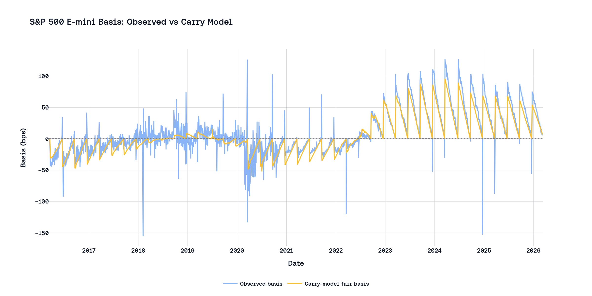
The time-series structure is economically intuitive. The fair basis follows a sawtooth pattern because carry decays as the contract approaches quarterly expiry and resets after rolling into the next contract. The observed basis tracks the same pattern, while short-lived deviations reflect liquidity shocks, session timing differences, and temporary dislocations rather than a breakdown of the carry relation itself.
Now let’s imagine how the pricing of futures on cryptocurrency assets would work: BTC has no native yield (\(y = 0\)), so the entire financing cost passes through as basis - a 3-month BTC future at 3.6% USD rates would trade ~0.9% above spot. ETH, by contrast, generates ~2.4% APR from staking, which offsets most of the financing cost - the fair basis drops to ~0.3%. As the reader can notice, the existence of yield on the asset very strongly affects the pricing of the futures contract.
A brief explanation of why futures and spot prices converge: as time passes, \(T\) shrinks toward zero, and so does the cost of carry embedded in the basis. On the final day, with nothing left to finance and no dividends left to collect, the futures price and spot price must be equal. If this were not the case, then a trader could simultaneously buy one and sell the other for an immediate riskless profit.
And this is the most important difference between traditional futures and perpetuals, which are widely used in crypto markets – the cost of carry lives in the price. The buyer of the futures contract pays a price that already incorporates the financing cost; the carry is fully expressed in the basis and fully amortized by expiry.
1.2 What changes with perpetuals
Perpetual futures - contracts that track an asset’s spot price indefinitely through a funding mechanism rather than through delivery at expiry.
As one can guess from the name of this type of derivative, perpetuals do not have an expiry date, which means there is no point in time when the perp and spot prices must converge; thus, perpetuals do not have a built-in mechanism for price convergence. This is what led to the creation of the funding rate mechanism.
This mechanism was invented to substitute for expiry-driven convergence. It creates periodic (or continuous) payments between long and short position holders that incentivize the contract price to track the spot index. When the perpetual trades above spot, longs pay shorts - discouraging further buying and encouraging selling. When it trades below, shorts pay longs - the reverse.
But this raises a design question that the rest of this paper explores: how should the cost of carry be expressed in the price of a perpetual?
2. Perpetuals and the history of the funding rate
2.1 The BitMEX formula
BitMEX launched the XBTUSD perpetual swap in May 2016 - the first futures contract with no expiry date. Their funding rate formula consists of two components:
\[ F = \bar{P} + \text{clamp}(I - \bar{P},\ -0.05\%,\ +0.05\%) \]
The premium index \(\bar{P}\) measures how far the perpetual’s price deviates from the spot index. It is computed from the order book - not from the mid-price, but from the average execution price for a meaningful notional size (the Impact Margin Notional) on each side:
\[ P = \frac{\max(0,\ \text{Impact Bid} - \text{Index}) - \max(0,\ \text{Index} - \text{Impact Ask})}{\text{Index}} \]
This premium is sampled periodically and averaged over the funding interval to produce \(\bar{P}\).
The interest rate \(I\) was designed to capture the cost-of-carry baseline - exactly the financing cost we discussed in Section 1. BitMEX defined it as:
\[ I = \frac{\text{Interest Quote Index} - \text{Interest Base Index}}{\text{Funding Interval}} \]
For XBTUSD, the Interest Quote Index represented the daily cost of borrowing the quote currency (USD), and the Interest Base Index represented the cost of borrowing the base currency (BTC/XBT). The Funding Interval was 3 (three 8-hour windows per day).
The clamp function limits the interaction between the two components. The term \((I - \bar{P})\) is bounded to \(\pm 0.05\%\), creating a “dead zone” where small premium fluctuations have no effect on the funding rate; it simply becomes equal to \(I\). Outside the dead zone, the premium dominates, but the clamp still shifts the result by up to \(\pm 0.05\%\) relative to a pure premium formula. The clamping function also creates its own problems and nuances; we will also discuss them later.
Let us also expand a bit on the topic of the parallels between spot and perp, namely, why the IR must be involved in payments from one side to the other. A perpetual position is economically equivalent to a leveraged spot trade, and the IR reflects the financing asymmetry between the two sides.
A trader who is long a BTC perpetual holds the same exposure as someone who borrows USD, buys BTC on spot, and holds it. Whether the USD is explicitly borrowed or simply deployed (forgoing yield on a risk-free alternative), the long side carries a financing cost equal to the USD interest rate.
A trader who is short a BTC perpetual holds the same exposure as someone who borrows BTC, sells it for USD, and holds the USD proceeds. The short side pays the BTC borrow rate but earns the USD rate on the cash received.
The net carry difference between the two sides is:
\[ \text{carry differential} = r_{\text{USD}} - r_{\text{BTC}} \]
Suppose the USD rate is 3.6% APR and the BTC borrow rate is 0.5% APR. The long is structurally “paying” 3.6% for financing; the short is earning 3.6% on USD and paying 0.5% for the BTC loan - a net position of +3.1%. Even when the perpetual trades exactly at the spot price (premium = 0), the long side is worse off by the rate differential. Without an IR in the funding formula, this asymmetry would go uncompensated, and the market would adjust by pushing the perpetual price below spot - reintroducing carry into the basis, which defeats the purpose of the tethering mechanism.
The IR resolves this by charging longs and paying shorts a baseline rate that approximates the carry differential, keeping the perpetual price centered on spot.
2.2 Theoretical ground
For our purpose, Ackerer et al. (2024) [1] provide a theoretical benchmark that pins down one design fact: the interest term in funding is the carry term in a no-arbitrage model. In their linear-perpetual setup, long cash flow is
\[ \Delta C_{t+1}^{\text{long}} = (f_{t+1}-f_t) - \kappa_t(f_t-x_t) - \iota_t x_t, \]
where: - \(\Delta C_{t+1}^{\text{long}}\) is the one-period cash flow to a long position from \(t\) to \(t+1\). - \(f_t\) is the perpetual futures price at time \(t\). - \(x_t\) is the spot price of the underlying at time \(t\). - \(\kappa_t\) is the premium-reversion (anchoring) coefficient applied to basis \((f_t-x_t)\). - \(\iota_t\) is the funding interest factor applied to the spot notional.
and, under no-arbitrage conditions, the equalizing interest specification that keeps perpetual and spot coincident is
\[ \iota_t = \frac{r_{a,t}-r_{b,t}}{1+r_{b,t}} \]
where: - \(r_{a,t}\) is the one-period financing (risk-free) rate of quote currency \(a\) over \([t,t+1]\). - \(r_{b,t}\) is the one-period financing (risk-free) rate of base currency \(b\) over \([t,t+1]\). - the denominator \((1+r_{b,t})\) is the discrete-time compounding adjustment implied by covered interest parity; in continuous time this adjustment collapses, giving \(\iota_t=r_{a,t}-r_{b,t}\).
This equation (Corollary 1 from their paper) is the formal statement behind our thesis: IR must participate in the formula and is equal to the difference of risk-free rates.
The practical implication for this report is direct. The premium component can anchor short-horizon deviations of perp from spot, but the IR component is the part that embeds structural carry. If IR does not track the underlying rate spread, the missing carry does not disappear; it re-enters the system as persistent basis distortion or a one-sided transfer in funding.
Therefore, we have a theoretical justification for the inclusion of IR in the funding rate formula. Next, we will consider how different exchanges implement this formula and its components in practice.
2.3 The dynamic phase and the fixation
In its initial implementation, BitMEX sourced both interest rate indices from the Bitfinex margin lending market - the largest peer-to-peer crypto lending venue at the time. The IR was dynamic, fluctuating with real borrowing costs for USD and BTC. Unfortunately, in April 2017, due to banking disruptions at Bitfinex that made overnight lending rates unreliable, BitMEX froze the IR at a fixed value:
“To arrive at this number, we calculated the average difference between the Bitfinex daily USD and Bitcoin lending rates for a 12 month period ending 31 March 2017 to arrive at the positive 0.03% rate.” — BitMEX Blog, April 2017 [2]
The resulting constant:
- Interest Quote Index: 0.06% daily
- Interest Base Index: 0.03% daily
- Difference: \(0.03\% / 3 = \textbf{0.01\%}\) per 8-hour interval
- Annualized: \(0.01\% \times 3 \times 365.25 \approx \textbf{10.95\%}\) APR
The \(0.06\%\) / \(0.03\%\) daily numbers from BitMEX (i.e., about 21.9% and 10.95% APR) implied by Bitfinex margin lending in 2016–17 are plausible but eye-popping. For context: crypto-collateralized lending rates during that time were structurally elevated due to thin USD on/off-ramps and high-volatility collateral.
BitMEX described this as temporary: “when the deposits and withdrawals of fiat and Bitcoin are operating normally, we will select an appropriate exchange from which to source overnight USD and Bitcoin rates”. However, the “appropriate exchange” was never selected, and this constant remained with us.
2.4 The industry standard
What started as a BitMEX workaround became the industry template. Almost every major exchange that launched perpetual contracts after BitMEX adopted the same formula and the same fixed IR:
| Exchange | Type | IR (8h) | Documentation language |
|---|---|---|---|
| Binance | CEX | 0.01% | “The interest rate is fixed at 0.03% daily by default” |
| Bybit | CEX | 0.01% | “Interest rate is fixed at 0.03% per day” |
| Hyperliquid | DEX | 0.01% | “For consistency with CEXs, predetermined at 0.01% every 8 hours” |
| OKX | CEX | 0.01% | “Interest rate = 0.03% / (24 / Settlement interval)” |
| Extended | DEX | 0.01% | “Set at 0.01% per 8 hours for consistency with CEXs” |
| Paradex | DEX | 0.01% | “Interest Rate = 0.01%” (continuous accrual, 8h rate) |
| Variational | DEX | 0.01% | “Interest rate is fixed at 0.00125% / hour” (= 0.01%/8h) |
| EdgeX | DEX | 0.01% | Preserves Quote/Base decomposition in formula but does not disclose source rates |
Binance copied the BitMEX formula, Bybit copied Binance, and DEX protocols copied CEXs, explicitly citing “consistency” as the reason. As a result, we have a situation where a single 12-month average from Bitfinex lending markets in 2016–2017 became a universal constant embedded in almost every major perpetual contract across the industry.
3. Why do we need IR at all?
The previous section showed that a fixed IR has propagated through the industry without recalibration. A natural question follows: is the IR component necessary in the first place? Several major venues operate without an explicit fixed IR anchor. What changes when this term is removed from the formula?
3.1 Two separate problems
The funding mechanism is asked to solve two distinct problems at once.
The first is price tethering. A perpetual contract is a derivative; its utility depends on tracking the price of the underlying asset. If the perpetual price consistently drifts from spot, the contract stops functioning as a reliable instrument for hedging or speculation.
The second is cost-of-carry embedding. As discussed before, a long perpetual position is economically equivalent to a financed spot purchase, and this financing has a cost. This cost cannot simply be ignored; if it is not separately expressed in the formula, then it re-emerges as a persistent basis, distorting the premium signal. Carry embedding is a design preference: the contract works without it, but the price signal becomes less interpretable.
The standard BitMEX formula bundles both into one mechanism - the premium component handles tethering, the IR handles carry. However, there may exist other interpretations of this mechanism, which still ignore the cost of carry, and this can exist if we accept a consistently small deviation of the perp price from the spot as normal. In the following section, we will consider a couple of examples of exchanges that have decided not to use any IR at all in their funding rate mechanism.
3.2 Tethering works without IR
The premium component alone is sufficient to keep the perpetual price near the spot index. When the perpetual trades above spot, funding turns positive (longs pay shorts), creating sell pressure. When it trades below, funding turns negative (shorts pay longs), creating buy pressure. As the reader can notice, this mechanism does not require a fixed IR term, since it operates directly on observed price deviation.
Deribit demonstrates this. Its funding formula contains no IR:
\[ F = \max(0.025\%,\ P) + \min(-0.025\%,\ P) \]
When the premium is within \(\pm 0.025\%\), a damper reduces funding to exactly zero. The contract remains tightly tethered to spot without a positive IR anchor.
In Crypto.com’s mechanism, let \(\bar{P}_{4h}\) denote the average premium over a 4-hour calculation window. The published interval rate is premium-only:
\[ R_{4h} = \bar{P}_{4h} \]
Funding is then settled hourly over the next four hours at one-quarter of that interval value:
\[ F_{1h} = \frac{R_{4h}}{4} = \frac{\bar{P}_{4h}}{4} \]
So in this specification, there is no separate fixed IR anchor and no clamp term; carry is expressed through the premium path itself.
3.3 Similar mean funding, different formula mechanics
Now let’s examine the data on funding rates from various venues; for comparability, all funding series are normalized to 8-hour-equivalent rates:
- Binance and Bybit: native 8-hour settlements (direct)
- Deribit: hourly funding summed into 8-hour realized windows
- Crypto.com: hourly settled funding summed into 8-hour realized windows
- Hyperliquid: hourly funding summed into 8-hour realized windows
- Lighter: hourly funding signed by direction and summed into 8-hour realized windows
Firstly, let’s focus on the longest window across CEXs for the BTC market: 01 Jan 2022 – 07 May 2026
| Venue | Mean APR | Median APR | Share at 0.01% (8h) | Share at 0.00% (8h) | P05 funding (8h) | P95 funding (8h) |
|---|---|---|---|---|---|---|
| Binance | 6.71% | 6.72% | 30.06% | 1.03% | -0.004541% | 0.013079% |
| Bybit | 6.82% | 8.97% | 39.06% | 0.73% | -0.006985% | 0.014474% |
| Deribit | 4.94% | 0.91% | 0.48% | 18.84% | -0.003657% | 0.025711% |
| Crypto.com | 4.01% | 1.26% | 0.61% | 1.20% | -0.015646% | 0.030995% |
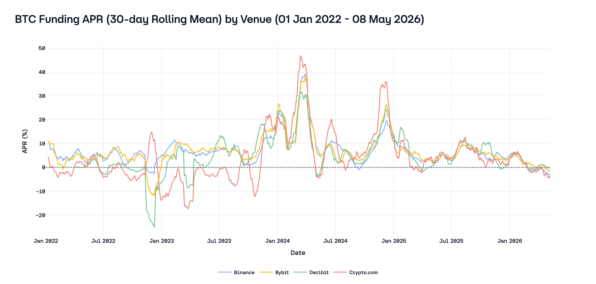
(BTC) Six-venue comparison (2025-05-08 – 2026-05-08 UTC)
| Venue | Mean APR | Median APR | Share at 0.01% (8h) | Share at 0.00% (8h) | P05 funding (8h) | P95 funding (8h) |
|---|---|---|---|---|---|---|
| Binance | 3.67% | 4.02% | 13.50% | 1.73% | -0.005613% | 0.010000% |
| Bybit | 4.14% | 4.27% | 22.81% | 1.28% | -0.004746% | 0.010000% |
| Deribit | 4.32% | 1.11% | 0.09% | 17.88% | -0.001932% | 0.017911% |
| Crypto.com | 3.26% | 3.28% | 0.82% | 0.64% | -0.013237% | 0.019706% |
| Hyperliquid | 8.37% | 10.54% | 35.68% | 0.18% | -0.006339% | 0.020824% |
| Lighter | 7.88% | 10.52% | 0.36% | 0.55% | -0.005600% | 0.014725% |
(ETH) Six-venue comparison (2025-05-08 – 2026-05-08 UTC)
| Venue | Mean APR | Median APR | Share at 0.01% (8h) | Share at 0.00% (8h) | P05 funding (8h) | P95 funding (8h) |
|---|---|---|---|---|---|---|
| Binance | 3.35% | 4.01% | 14.60% | 0.91% | -0.007017% | 0.010000% |
| Bybit | 3.68% | 4.36% | 25.36% | 0.91% | -0.006726% | 0.010000% |
| Deribit | 1.33% | 0.11% | 0.36% | 26.92% | -0.004725% | 0.010025% |
| Crypto.com | 0.65% | 0.95% | 0.55% | 0.64% | -0.016646% | 0.016821% |
| Hyperliquid | 8.19% | 10.41% | 33.21% | 0.46% | -0.007026% | 0.022043% |
| Lighter | 8.66% | 10.52% | 0.64% | 0.18% | -0.007100% | 0.022725% |
Here, the reader’s eyes may glaze over all this data in the table, because it is very ambiguous, as we touch upon several issues at once: 1. The difference (or lack thereof) in mean funding rate between exchanges 2. The presence (or absence) of arbitrage in the funding rate (the difference between the mean APR still exists) 3. The columns “share at 0.01%”
We will analyze these issues one by one. Let’s start by thinking about the logic of arbitrage, and how it is connected with the formula in this case. Let’s imagine that we have an absolutely ideal market and there are no difficulties or risks in buying and selling assets on all of the above-mentioned platforms and on the spot. This is exactly the case considered earlier in section 2.2, where we discussed what the cost of carry should be. De jure, this is how it should work: if there is an opportunity to make a logically identical trade on spot, then arbitrageurs should use this opportunity and bring the market into equilibrium.
Moreover, in an ideal market, the participation of IR in the funding rate formula has absolutely no impact on the final situation in the market. The only thing IR influences is the price of the perp, but even this is absolutely unimportant. Let’s analyze in more detail why this is so. Let’s consider a case where IR equals some constant that does not match the real cost of carry. What will happen in this case? If IR is a constant, then the only thing that links the perp and spot prices is the premium. At the same time, as the market is ideal, all its participants know the real cost of carry and therefore can accurately assess the difference between the constant and the true value. If such a difference exists (and by the conditions of our thought experiment, it does), that’s an opportunity for arbitrage, which will be executed immediately. After this arbitrage is executed, we will get a basis that reflects this cost of carry. Thus, setting the correct value for IR in no way influences the final market, since the market can assess the true price of the perp, and can also trade at this price safely. For greater clarity, the reader is invited to assume IR as some huge value, and to think about what the basis would be in this case. The only problem with this approach is that we move away from the definition of perpetual futures, because by definition the perp price should equal the spot price — or rather, the average basis over a long horizon should tend to zero. Otherwise, it is not a perp, but a perp with a deviation.
However, we do not live in an ideal world, and our market is not ideal either; the various IRs and formulas chosen by exchanges do affect the final result. Despite the imperfections of our market, the attentive reader can see here, in the BTC market, that formula mechanics do not influence the mean APR for CEXs, because arbitrageurs strongly influence this market and balance out the funding rate. At the same time, in the second-largest market — the ETH market — one can notice that on CEXs that do not have a hardcoded funding rate offset, the final funding rate is significantly lower than at their competitors with the outdated formula.
Furthermore, perp DEX funding remains materially above major CEX means for both BTC and ETH in this window. Why is that? The author has several hypotheses:
- Demand composition skew. DEX users likely skew more toward directional retail longs with a higher risk appetite. Fewer institutional hedgers and basis traders mean the buy-side pressure that generates positive funding isn’t offset as effectively. To prove this point, we can take a look at the biggest pool-based perp DEX - Jupiter. Here, traders are trading not against each other but against the JLP pool, so there is no binding relationship between the long and short open interest.
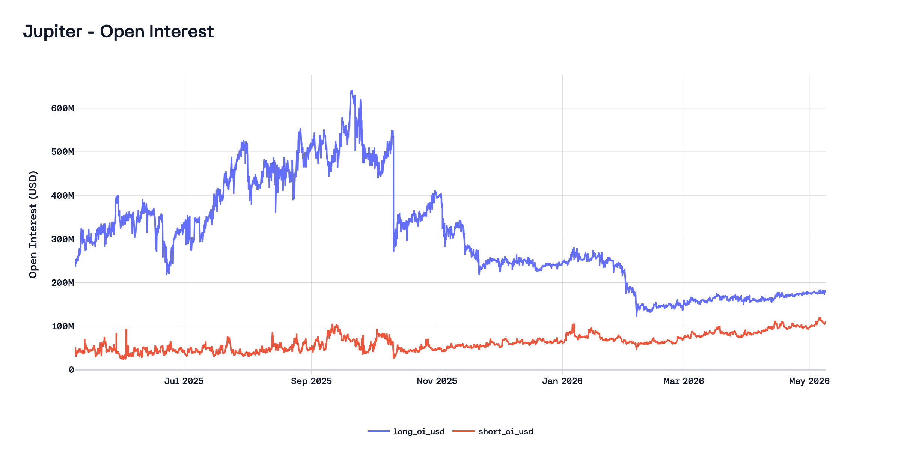
As the reader can observe on this chart, at any point in time, long OI is significantly larger than short OI.
- Arbitrage friction. Cross-venue basis trades (short DEX perp, long CEX spot or perp) require capital parked on-chain, smart contract risk exposure, bridge/withdrawal latency, and often worse capital efficiency (no cross-margining with spot). These frictions widen the band within which funding rates can diverge before arbitrage becomes profitable. This is exactly what we talked about earlier regarding the imperfection of our market; at the moment, using perp DEX can be risky.
- Liquidity feedback loop. Higher funding attracts short-side liquidity (basis traders), but if the friction cost exceeds the spread, the equilibrium funding rate stabilizes above the CEX level rather than converging to it. The DEX premium is then a persistent friction premium, not a transient dislocation.
Having discussed the first two issues, we move on to the third: the 0.01% column. This is a very important column that highlights a problem we have not addressed before: the clamp. Aside from the IR-setting issue, the formula includes a clamp that significantly affects the final funding rate. Again, returning to our idea of an ideal market, if the market were ideal, the clamp would not matter, because the market would move the perp price to what would be fair.
Let us return to the real world and consider the problems and consequences of using the clamp for exchanges.
4. Pathologies of the standard IR+clamp design
4.1 How the formula behaves
If the IR overcharges relative to the true financing cost, the market has one channel to correct: the premium component. When the perpetual price is pushed below the spot index, the premium turns negative, which reduces the total funding rate below the IR baseline.
But this correction is not straightforward, because the clamp function makes the relationship between premium and funding rate non-linear. Recall the three regimes:
- Dead zone (\(-0.04\% \leq P \leq +0.06\%\)): \(F = 0.01\%\), regardless of \(P\). The premium can move freely within this range without affecting funding at all.
- Below dead zone (\(P < -0.04\%\)): \(F = P + 0.05\%\). Funding drops below 0.01%, and each additional basis point of negative premium translates one-to-one into lower funding.
- Above dead zone (\(P > +0.06\%\)): \(F = P - 0.05\%\). Funding rises above 0.01%, tracking the premium.
This means the dead zone acts as a barrier. When the equilibrium financing cost is below the IR, which, as we have shown, is the typical condition, the market must push the premium below -0.04% before the funding rate begins to decline at all. A premium of -0.03% produces the same funding rate as a premium of +0.05%: both yield exactly 0.01%. The market must overcome a 4-basis-point threshold just to begin correcting the overcharged IR. And this, in practice, turns out to be unachievable; the market does not manage to control the price of the perp so confidently, and as a result, we have the following situation:
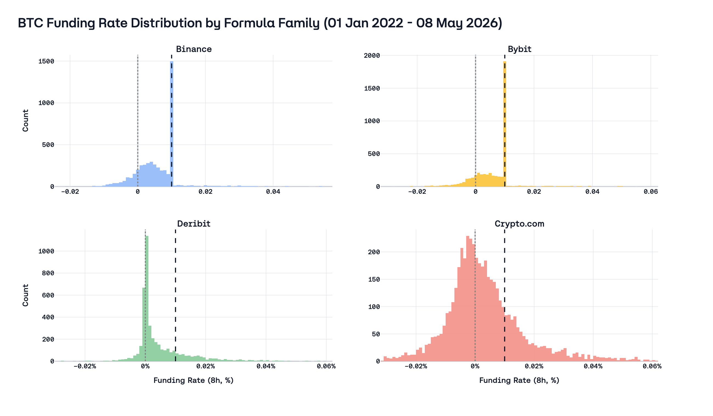
This graph speaks for itself; the difference in distribution between different types of formulas is visible to the naked eye. The presence of the clamp has a very strong effect on the final distribution of the funding rate, with several adverse consequences:
- The premium signal is polluted.
Firstly, any premium values inside the clamp do not affect the final funding rate in any way, and thus moving the price to change the flow of payments becomes more difficult and requires more capital. At this point, the premium is negatively affected not only by the hardcoded IR but also by the clamp.
| Venue | Mean (8h, %) | Median (8h, %) | Mean (bps) | Median (bps) | p0.5% (8h) | p99.5% (8h) |
|---|---|---|---|---|---|---|
| Binance | −0.030% | −0.043% | −2.97 | −4.28 | −0.067% | 0.105% |
| Bybit | −0.027% | −0.042% | −2.72 | −4.18 | −0.081% | 0.106% |
| Crypto.com | ≈0% | 0.001% | ≈0 | 0.13 | −0.086% | 0.094% |
Binance and Bybit premia are negative on average: the perpetual trades below the index most of the time, consistent with having to absorb a positive fixed anchor in the IR+clamp family. The Crypto.com row sits near zero on average by construction over this long window, which is correct, since by the definition of perp, it should follow the spot price, since the mean spread between these two prices should tend to zero. Moreover, it underscores that it is not the same object as the Binance/Bybit premium series (see Appendix C for the alternative implied premium from pure funding inversion, including Deribit).
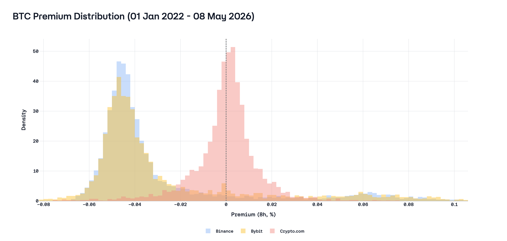
It remains important where the clamp centers the flat funding regime: for Deribit it is 0% funding in the dead zone, while for Binance and Bybit it is 0.01% per 8h (~10.95% APR), so the same gap between fair carry and the printed anchor implies a different division between premium and the constant term.
Consequently, when the IR is set excessively high, we observe the following outcome: the premium must be persistently negative to correct the overcharged carry, and this negative bias is indistinguishable from directional bearishness. A trader observing the BTC perpetual at a -0.03% discount to spot cannot tell whether the market is expressing a bearish view or simply counteracting an inflated IR. In principle, the IR was supposed to clean up the premium signal, but in the end, a miscalibrated IR contaminates it.
- Misconfigured IR disproportionately subsidizes one side of the market.
When the premium sits within the dead zone, which, as the reader may observe, happens frequently, the funding rate is equal to the IR; in our case, this is either 0 or 10.95%. In the current rate environment, this exceeds the actual cost of capital by roughly 5–7 percentage points (or, on the contrary, falls short by about 3–5 pp). In addition, it may be suspected that the use of an incorrect formula ultimately affects the entire perp market. Because most platforms use an inflated IR with a clamp, even venues that do not use this formula see their final funding rates increase through arbitrage. Such a situation can be observed in the BTC market over the last year.
As a result, longs pay excessively, while shorts collect this surplus, creating a financing rate that lacks a foundation in market conditions. The funding payment becomes a yield product for shorts — an artificial incentive to hold short exposure that exists solely to capture the IR spread. This structurally overstated long→short transfer laid the foundation for the creation of protocols such as Ethena and Resolv, which earn money on delta-neutral strategies.
5. Per-asset IR: estimating the carry anchor from money markets
The key question is not whether IR should exist, but what IR should be for each asset. A single constant can only be correct by accident.
5.1 Mapping the theoretical term to observable rates
Section 2.2 established the financing structure of the IR term:
\[ \iota_t = \frac{r_{a,t} - r_{b,t}}{1 + r_{b,t}} \approx r_{a,t} - r_{b,t} \]
where \(r_{a,t}\) is the quote-currency financing rate and \(r_{b,t}\) is the base-asset financing/yield rate over the same horizon. In live money markets, however, each leg has two different observable rates (borrow and supply), and they are not equal. To map theory to data, we write the transfer terms directly through observable rates:
\[ I^{L\to S}_{t,\text{long}}(x)=\text{BorrowAPR}_{\text{USDC/USDT},t}-\text{SupplyAPR}_{x,t} \]
\[ I^{L\to S}_{t,\text{short}}(x)=\text{SupplyAPR}_{\text{USDC/USDT},t}-\text{BorrowAPR}_{x,t} \]
The first expression is the long-parity transfer (long perp versus financed spot long), while the second is the short-parity transfer (short perp versus borrowed-asset short spot). Because borrow APR typically exceeds supply APR on both legs, these two values define a corridor rather than a single point:
\[ I^{L\to S}_{t,\text{short}}(x) \le I_t(x) \le I^{L\to S}_{t,\text{long}}(x) \]
For implementation, we use the midpoint of this no-arbitrage corridor:
\[ I^{\text{fair}}_t(x)=\frac{I^{L\to S}_{t,\text{long}}(x)+I^{L\to S}_{t,\text{short}}(x)}{2} \]
and convert it to 8-hour units via \(I^{\text{fair}}_{8h}(x)=I^{\text{fair}}_{\text{APR}}(x)/(3\cdot365.25)\).
This construction keeps the long-short transfer explicit: positive values imply a structural transfer from longs to shorts, while negative values imply the opposite direction.
5.2 Why money-market proxies are the right benchmark
Money-market rates are not risk-free rates, but they are a relevant observable benchmark for the cost of carry. They update continuously, are publicly observable on-chain, and price the capital that funds carry trades.
The gap between borrow and supply APR reflects utilization, reserve factors, liquidation risk, and protocol fees. This is why we estimate a fair-IR corridor before mapping it to a single implementation value. We construct that corridor from historical borrow and supply series for both the quote leg and the base leg on liquid venues, aggregated daily and aligned in time.
A caveat is that these rate sources do not perfectly match the financing model implicit in the IR. The IR is most naturally interpreted as the cost of financing a spot position: borrowing quote currency, buying the base asset, and carrying that exposure over time. Aave, the most liquid DeFi lending venue, operates differently. Borrowers must post 130–150%+ collateral, and reserve factors divert part of gross interest away from suppliers. This is not the same trade. Overcollateralization, utilization pressure, and protocol design can all distort observed rates relative to a more capital-efficient funding market, and those distortions need not be symmetric across legs. If one leg faces stronger collateral demand or greater asset-specific scarcity, the midpoint of the corridor can still be biased toward one leg.
Even so, what the IR needs is not a perfect absolute rate, but an estimate of the relative funding differential between quote and base assets. DeFi lending markets provide an accessible, continuously quoted measure of that differential. If the observable differential persistently falls in the 2–4% range while the implementation anchor is fixed at 10.95%, the burden is on that anchor to justify why implied financing should materially exceed what even imperfect observable money-market rates indicate.
5.3 Historical fair-IR estimates by asset
Applying this framework to the latest completed windows across venues gives a consistent result: fair IR is asset-specific and materially below the fixed 10.95% anchor. The table below reports realized corridor statistics from the datasets used in this section.
| Asset / venue pair | Mean borrow quote (APR) | Mean borrow base (APR) | Mean supply quote (APR) | Mean supply base (APR) | Mean \(I_{short}\) (APR) | Mean \(I_{long}\) (APR) | Midpoint \(I^{fair}\) (APR) |
|---|---|---|---|---|---|---|---|
| ETH (Aave USDT/WETH) | 5.12% | 2.68% | 3.73% | 2.02% | 1.05% | 3.10% | 2.08% |
| WBTC (Aave USDT/WBTC) | 5.12% | 0.32% | 3.73% | 0.01% | 3.41% | 5.11% | 4.26% |
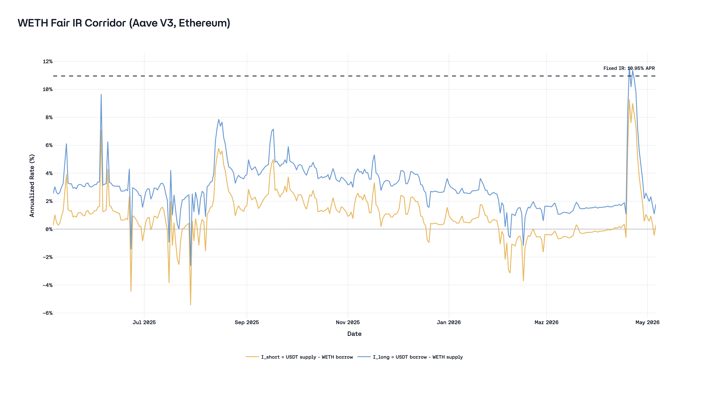
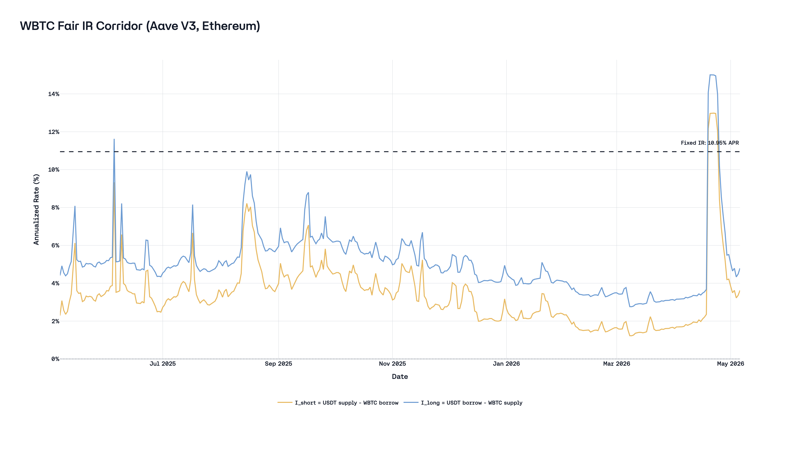
5.4 Asset-level interpretation
WBTC (as the BTC proxy in this section) is the baseline case: with minimal native yield on the base leg, fair IR mostly tracks the stablecoin borrowing regime. ETH lowers that carry meaningfully because the base leg earns staking yield, so the equalizing IR is in low single digits rather than around 11%. Across both assets, a positive universal anchor at 10.95% remains mechanically misaligned.
5.5 Implication for funding design
An ideal funding design should calibrate IR as a dynamic, per-asset parameter linked to observable money-market rates. A practical implementation can use smoothed daily inputs and bounded update rules to avoid noisy jumps. Any such mechanism is closer to a no-arbitrage structure than a static 2017 constant applied to every asset class.
The important point is not precision to the second decimal place. The important point is directional correctness: BTC < 10.95%, ETH materially below 10.95%. Once this ranking is acknowledged, uniform IR is no longer defensible as a neutral market standard.
5.6 Capital-adjusted executable IR: closing the loop
Sections 5.1-5.5 estimate a fair carry anchor from observable money markets. The missing practical step is execution: what rate differential must be present before real capital can run the arbitrage after collateral constraints and alternative funding costs are included. Here we focus only on BTC and let \(X\) denote USD hedge notional. If \(\text{LTV}=\text{debt}/\text{collateral}\), posted collateral is \(C=X/\text{LTV}\). For one concrete path (short BTC perp, externally fund collateral, supply USDC collateral on Aave, and borrow BTC on Aave), a practical executable-threshold expression is:
\[ I^{\text{exec,short}}_{t,\text{APR}}(X)=\frac{r^{\text{TradFi}}_{t,\text{USD}}-s^{\text{Aave}}_{t,\text{USDC}}}{\text{LTV}}+b^{\text{Aave}}_{t,\text{BTC}}+c^{\text{short}}_{\text{fric},t}(X) \]
where \(r^{\text{TradFi}}_{t,\text{USD}}\) is the external USD funding/opportunity cost on collateral capital \(C\), \(s^{\text{Aave}}_{t,\text{USDC}}\) is the USDC supply APR earned on \(C\), \(b^{\text{Aave}}_{t,\text{BTC}}\) is the BTC borrow APR on Aave, and \(c^{\text{short}}_{\text{fric},t}(X)\) is a path-specific friction premium (typically size-dependent) that aggregates execution costs (bridging/transfer latency, margin fragmentation, liquidation buffer, smart-contract risk, and fees). Costs enter positively and the collateral yield enters as an offset. For funding-interval comparisons, convert via \(I^{\text{exec,short}}_{t,8h}(X)=I^{\text{exec,short}}_{t,\text{APR}}(X)/(3\cdot365.25)\).
This term should be interpreted as one executable bound, not as a replacement for the theoretical no-arbitrage condition in Section 2.2. The fair-IR corridor estimated in Sections 5.1-5.5 describes where carry should sit in a frictionless market; the executable threshold describes when arbitrage capital is actually induced to enforce that level in a specific implementation path. The opposite implementation path has its own threshold, so realized funding can remain inside an executable corridor around the fair anchor when neither side clears costs.
Defining edge in this way makes the alternative-cost argument measurable. Let \(FR^{\text{obs}}_{t,8h}(\text{BTC})\) denote the observed realized BTC funding rate over the same 8-hour horizon:
\[ \alpha^{\text{short}}_{t,8h}(X)=FR^{\text{obs}}_{t,8h}(\text{BTC})-I^{\text{exec,short}}_{t,8h}(X) \]
For a concrete scale check, take \(\text{LTV}=0.75\), \(r^{\text{TradFi}}_{\text{USD}}=6\%\), \(s^{\text{Aave}}_{\text{USDC}}=4\%\), \(b^{\text{Aave}}_{\text{BTC}}=1\%\), and \(c^{\text{short}}_{\text{fric}}=1.5\%\). Then \(I^{\text{exec,short}}_{\text{APR}}\approx 5.16\%\) (about \(0.0047\%\) per 8h). In this setup, observed funding at 4.5% APR can look rich versus the fair-IR midpoint estimate in Section 5.3 and still fail to clear the executable threshold. When \(\alpha^{\text{short}}_{t,8h}(X)\le 0\), apparent funding dislocations are not economically actionable. This is exactly why funding inefficiencies can persist despite visible cross-venue spreads: market participants arbitrage what is executable, not what is merely theoretically fair.
6. Intentional IR deviations in practice
Some exchanges have already moved. Three categories of production markets show deliberate departures from 0.01%/8h.
6.1 BNB: the exchange-native token exception
BNB is the most revealing IR deviation case because the economic motive extends beyond carry calibration into exchange-level incentive design. Both Binance and Aster set IR = 0% for BNB perpetuals, because BNB is the main token of this ecosystem.
A positive IR imposes a baseline cost on long positions through funding. Zeroing it removes that cost, making it cheaper to hold long BNB perpetual exposure. For an exchange whose native token underpins fee discounts, staking rewards, and launchpad access, reducing the cost of going long is a direct economic incentive to support token demand. Put simply, in this way, Binance and its subsidiary exchange improve the conditions for going long on BNB.
| Asset | IR (8h) | Mean APR | Median APR | Share at 0.01% (8h) | Share at 0.00% (8h) | P05 (8h) | P95 (8h) |
|---|---|---|---|---|---|---|---|
| BNB | 0% | 0.88% | 0.00% | 0.37% | 69.13% | -0.002859% | 0.009902% |
| BTC | 0.01% | 3.70% | 4.08% | 13.06% | 1.19% | -0.005391% | 0.010000% |
| ETH | 0.01% | 3.32% | 3.96% | 14.52% | 1.37% | -0.007123% | 0.010000% |
BTC and ETH exhibit the dead-zone stickiness at 0.01%, documented in Section 4 (roughly low-teens percentage of observations). BNB’s spike sits at 0.00% instead — around 69% of observations land at exactly zero — because with IR = 0%, the dead zone is centered on zero rather than on 0.01%. Trailing-window mean APR for BNB is mildly positive (~0.9% annualized): the distribution stays concentrated at zero funding, while small positive skew dominates the arithmetic mean versus the prior sample regime.
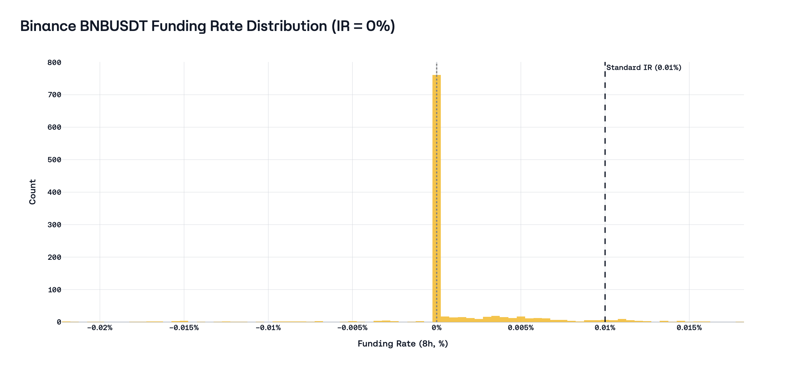
With IR = 0%, premium values in \([-0.05\%,\ +0.05\%]\) all map to \(F = 0\%\). The distribution confirms the parameter change works as designed: the spike moves from 0.01% to 0.00%, and the premium signal is freed from having to offset a misaligned anchor.
6.2 Fully crypto pairs: ETHBTC
When both legs of a perpetual are crypto assets, the standard USD-vs-crypto carry logic breaks down entirely. The IR component in the BitMEX formula was designed to capture the difference between the USD interest rate and the BTC interest rate. For a pair like ETHBTC (where the quote currency is BTC, not USD), the relevant carry differential is the ETH-vs-BTC borrow spread, which has no relationship to the 0.01%/8h constant.
Binance recognizes this and does not set IR = 10.95%; instead, it sets IR to 0%. Presumably, the explanation for this logic is Binance’s assumption that the interest rates for ETH and BTC are the same, so the cost of carry is equal to 0; however, in Section 5.3 we have already examined the interest rates of these assets, and this assumption is incorrect. Nevertheless, it is already encouraging that there are exchanges that consider each market separately and set parameters based on some logic, and not on an anachronism from 2017.
6.3 RWA markets: three venues, three approaches
Real-world asset perpetuals are the cleanest test case for IR calibration. Unlike crypto assets, where the cost of carry must be estimated from on-chain lending markets or inferred from funding itself, traditional asset classes have unambiguous carry structures anchored in central bank rates, dividend yields, and deep forward markets. Three venues — Binance, XYZ (trade.xyz on Hyperliquid), and Lighter — have each chosen a different IR calibration for their RWA markets. None of them gets it right for all asset classes, but each reveals a different failure mode of the uniform-constant approach.
First of all, let’s recall how we should calculate fair IR from the cost of carry: Section 1 established that the fair basis on a futures contract is \(S \cdot (e^{(r-y)T}-1)\), where \(r\) is the financing rate and \(y\) is the asset’s yield. Translating this into a perpetual IR is straightforward: the IR should approximate \(r - y\) in annualized terms, since the perpetual has no fixed maturity. For non-crypto assets in the current rate environment (SOFR yield ~3.6%, €STR ~1.9%):
- Commodities: no native yield (\(y = 0\)), so fair IR \(\approx r_{\text{USD}} \approx 3.6\%\) APR. This is the same logic that produces positive basis on COMEX gold futures - the entire financing cost passes through as carry.
- Equities:
- No-dividend (e.g. TSLA, AMZN): same structure as commodities - \(y = 0\), fair IR \(\approx 3.6\%\) APR.
- Dividend-paying stocks reduce fair IR by the dividend yield. Illustrative example: if AAPL’s dividend yield is about \(0.4\%\), then with \(r_{\text{USD}} \approx 3.6\%\) the fair IR is \(r-y_{\text{div}} \approx 3.6\% - 0.4\% = 3.2\%\) APR.
- FX: covered interest rate parity gives fair IR \(= r_{\text{USD}} - r_{\text{EUR}} \approx 3.6\% - 1.9\% \approx 1.7\%\) APR. For GBP/USD, the differential is near zero (\(r_{\text{GBP}} \approx 3.7\%\)). For JPY/USD, it would be ~3% (\(r_{\text{JPY}} \approx 0.7\%\)). Each FX pair has a different fair IR by construction; CIP (covered interest parity) is the most precisely observable carry relationship in all of finance.
Comparing how exchanges set IR against these fair-value benchmarks reveals a clear trend: instead of using a single outdated constant, each venue substitutes a different constant, which may be closer to correct but remains a one-size-fits-all solution.
| Asset class | Fair IR (APR) | Binance | XYZ (0.5×) | Lighter |
|---|---|---|---|---|
| Commodities (gold) | ~3.6% | 0% | 5.48% | 3.51% |
| Equities (TSLA, no div.) | ~3.6% | 0% | 5.48% | 3.51% |
| Equities (AAPL, div.) | ~3.2% | 0% | 5.48% | 3.51% |
| FX (EUR/USD) | ~1.7% | - | 5.48% | 0% |
Binance sets IR = 0% for all non-crypto assets: this is a sweeping acknowledgment that 10.95% is arbitrary for non-crypto assets, but the correction overshoots: zeroing the IR for gold ignores ~3.6% of real financing cost, shifting the dead zone to center on zero rather than on the fair carry rate. The formula remains identical; only the IR input changes.
XYZ sets a 0.5× multiplier on everything: they apply a 0.5× multiplier to the baseline funding rate formula for all of their markets — stocks, commodities, forex, and indices [10]. The documentation is unusually explicit: “This reduces baseline funding from a default of ~11% annualized to ~5.5%, better reflecting carry costs of traditional asset classes (typically closer to SOFR + 1-2%).” This is the most direct carry-calibration statement in any venue’s public documentation - it names the benchmark (SOFR), quantifies the target range, and explains why the crypto default is wrong. The 5.48% effective IR is close to fair for commodities (~3.6%) but overstates FX carry.
Lighter differentiates FX from non-FX, setting IR = 0.32 bp/8h (~3.51% APR) for commodity and equity perpetuals and IR = 0% for FX pairs [12]. This is the only venue that explicitly distinguishes between asset class categories - a meaningful structural improvement. The 3.51% rate for commodities and equities is the closest to fair carry of the three venues, while the 0% for FX undershoots the EUR/USD differential.
7. Conclusion
In this article, we examined the problems and consequences of the fact that perp exchanges decided not to bother and took the simple path - to use the old constant, which was justified by the market of 2017. This value still affects the market, making shorts a more profitable side for trading than longs. In addition, we examined the problems of the main formula, which is used by the vast majority of platforms, and found that it negatively affects basis and premium.
How to fix the situation?
- Do not use the clamp in the formula; it only limits the normal distribution of funding rate payments. Although the clamp makes funding rate payments more stable, it disrupts the distribution of those payments and worsens the convergence of spot and perp prices.
- Set IR on a per-market basis, and do not try to use one constant for all markets at once. This may seem complicated at first, so perhaps it is worth starting with the largest markets, such as BTC, ETH, and SOL, as they make up the largest share of the perp market. For the other markets, at first it is worth simply setting SOFR, since for the overwhelming majority of markets it is quite difficult to find a high-quality risk-free rate.
Appendix A. ETH cross-venue diagnostics
A.1 ETH funding by formula family
| Venue | Mean APR | Median APR | Share at 0.01% (8h) | Share at 0.00% (8h) | P05 funding (8h) | P95 funding (8h) |
|---|---|---|---|---|---|---|
| Binance | 6.45% | 7.16% | 29.41% | 0.61% | -0.006759% | 0.016673% |
| Bybit | 6.77% | 9.74% | 40.53% | 0.61% | -0.007603% | 0.017762% |
| Deribit | 2.71% | 0.34% | 0.20% | 17.55% | -0.009226% | 0.025312% |
| Crypto.com | 2.33% | -0.44% | 0.40% | 0.80% | -0.016944% | 0.032040% |
For comparability with Section 3.3, the strict six-venue rollup is duplicated here:
| Venue | Mean APR | Median APR | Share at 0.01% (8h) | Share at 0.00% (8h) | P05 funding (8h) | P95 funding (8h) |
|---|---|---|---|---|---|---|
| Binance | 3.35% | 4.01% | 14.60% | 0.91% | -0.007017% | 0.010000% |
| Bybit | 3.68% | 4.36% | 25.36% | 0.91% | -0.006726% | 0.010000% |
| Deribit | 1.33% | 0.11% | 0.36% | 26.92% | -0.004725% | 0.010025% |
| Crypto.com | 0.65% | 0.95% | 0.55% | 0.64% | -0.016646% | 0.016821% |
| Hyperliquid | 8.19% | 10.41% | 33.21% | 0.46% | -0.007026% | 0.022043% |
| Lighter | 8.66% | 10.52% | 0.64% | 0.18% | -0.007100% | 0.022725% |
In this recent ETH window, convergence is strong for the two large IR+clamp venues (Binance/Bybit), while Deribit and Crypto.com remain at lower mean APR levels. This keeps the cross-family distinction visible even in a more mature market regime.
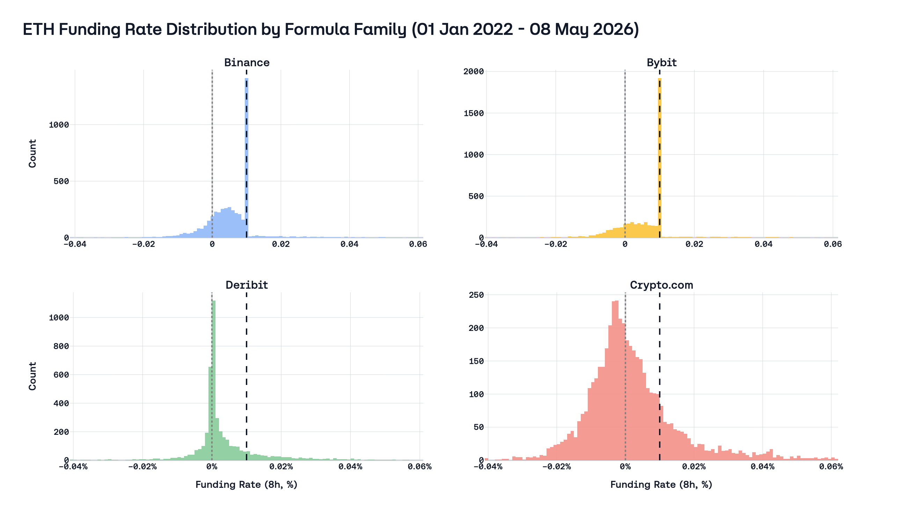
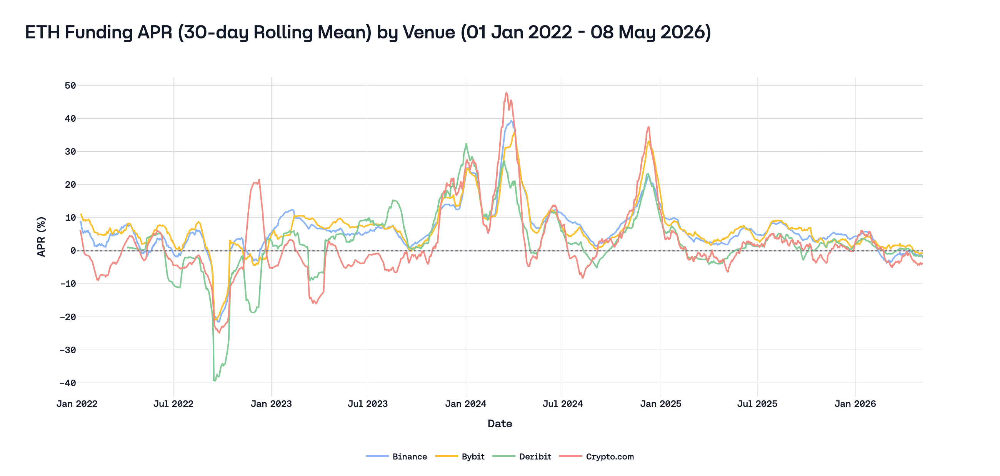
A.2 ETH implied premium decomposition
| Venue | Active share (2022+, %) | Mean implied premium (2022+, bps) |
|---|---|---|
| Binance | 70.59% | -3.60 |
| Bybit | 59.47% | -3.54 |
| Deribit | 82.45% | 1.15 |
| Crypto.com | 100.00% | -0.15 |
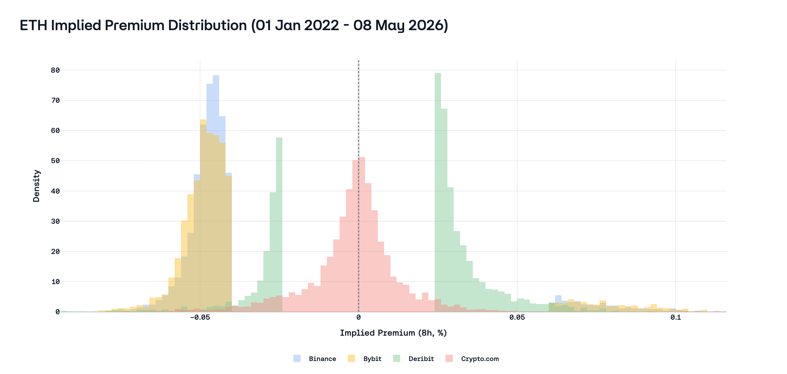
Appendix B. BTC nominal latest-365 distribution supplement
Strict four-CEX common-end summary (BTC):
| Venue | Mean APR | Median APR | Share at 0.01% (8h) | Share at 0.00% (8h) | P05 funding (8h) | P95 funding (8h) | Positive share (8h) |
|---|---|---|---|---|---|---|---|
| Binance | 3.67% | 4.02% | 13.50% | 1.73% | -0.005613% | 0.010000% | 77.01% |
| Bybit | 4.14% | 4.27% | 22.81% | 1.28% | -0.004746% | 0.010000% | 75.00% |
| Deribit | 4.32% | 1.11% | 0.09% | 17.88% | -0.001932% | 0.017911% | 72.99% |
| Crypto.com | 3.26% | 3.28% | 0.82% | 0.64% | -0.013237% | 0.019706% | 63.14% |
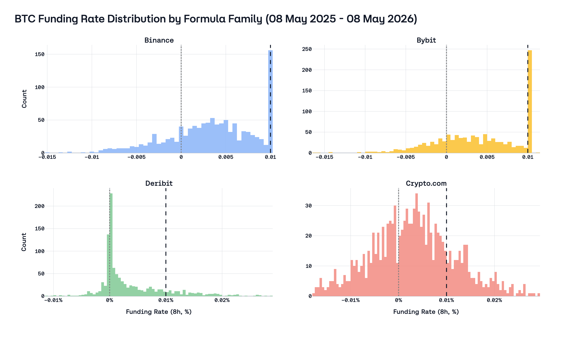
Appendix C. BTC implied premium from funding inversion (supplement)
One can recover an implied premium by inverting each venue’s funding formula outside non-identifiable regions (e.g. dead zones).
| Venue | Active share (%) | Mean implied premium (bps) |
|---|---|---|
| Binance | 69.95 | −3.71 |
| Bybit | 60.94 | −3.64 |
| Deribit | 82.08 | 1.93 |
| Crypto.com | 100.00 | −0.02 |
The sign pattern parallels the real premium table in Section 4.1 for Binance and Bybit (negative implied premium vs negative measured premium). Deribit appears only in this inversion: implied premium is positive on average, consistent with carry expressed through premium without a Binance-style IR offset. Crypto.com is near neutral on average over the long window.
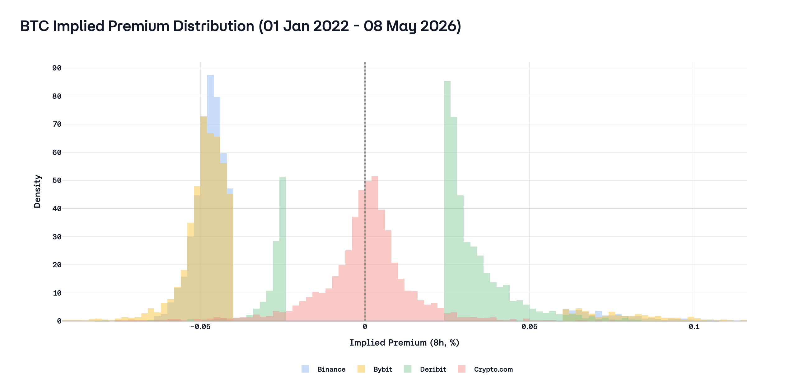
References
[1] Ackerer, Damien and Hugonnier, Julien and Jermann, Urban. “Perpetual Futures Pricing.” National Bureau of Economic Research, 2024. https://www.nber.org/papers/w32936
[2] BitMEX. “Bitcoin / USD Swap Funding Rate Calculation Changes.” BitMEX Blog, 2017. https://blog.bitmex.com/bitcoin-usd-swap-funding-rate-calculation-changes/
[3] Binance. “Introduction to Binance Futures Funding Rates.” Binance Support, 2026. https://www.binance.com/en/support/faq/introduction-to-binance-futures-funding-rates-360033525031
[4] Binance. “Important Updates on Funding Rate Settlement Frequency of USD-M Perpetual Contracts.” Binance Announcement, 2025. https://www.binance.info/en/support/announcement/detail/3243c81a35bd4f0c86a37315c3dc96cc
[5] Bybit. “Introduction to Funding Rate.” Bybit Help Center, 2026. https://www.bybit.com/en/help-center/article/What-is-funding-rate-and-predicted-rate
[6] OKX. “Funding Fee Mechanism.” OKX Support, 2026. https://www.okx.com/help/iv-introduction-to-perpetual-swap-funding-fee
[7] Deribit. “Funding Rate History API.” Deribit Documentation, 2026. https://docs.deribit.com/api-reference/market-data/public-get_funding_rate_history
[8] Crypto.com. “Funding and Session Settlement.” Crypto.com Help Center, 2026. https://help.crypto.com/en/articles/4894449-funding-and-session-settlement
[9] Hyperliquid. “Funding.” Hyperliquid Documentation, 2026. https://hyperliquid.gitbook.io/hyperliquid-docs/trading/funding
[10] trade.xyz. “Funding.” trade.xyz Documentation, 2026. https://docs.trade.xyz/perp-mechanics/funding
[11] Aster. “Funding Rate.” Aster Documentation, 2026. https://docs.asterdex.com/product/aster-perpetuals/fees-and-specs/funding-rate
[12] Lighter. “Funding.” Lighter Documentation, 2026. https://docs.lighter.xyz/trading/funding
[13] Extended Exchange. “Funding Payments.” Extended Exchange Documentation, 2026. https://docs.extended.exchange/extended-resources/trading/funding-payments
[14] Paradex. “Funding Mechanism.” Paradex Documentation, 2026. https://docs.paradex.trade/risk/funding-mechanism
[15] Variational. “Funding Rates.” Variational Documentation, 2026. https://docs.variational.io/omni/trading/funding-rates
[16] EdgeX. “Funding Fees.” EdgeX Documentation, 2026. https://edgex-1.gitbook.io/edgeX-documentation/trading/funding-fees
[17] Jupiter. “How Jupiter Perps Works.” Jupiter Documentation, 2026. https://station.jup.ag/guides/perpetual-exchange/how-it-works
[18] Aave. “Borrow Interest Rate.” Aave Documentation, 2026. https://docs.aave.com/risk/liquidity-risk/borrow-interest-rate
[19] Pendle. “Boros Overview.” Pendle Boros Documentation, 2026. https://pendle.gitbook.io/boros/boros-docs